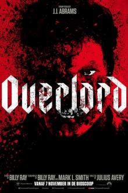
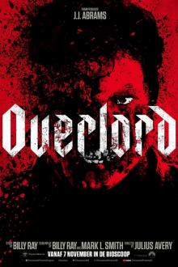

Eddie Brock is een succesvolle verslaggever in San Francisco, zijn show geeft veel kritiek op mensen en heeft veel grote bedrijven ten val gebracht. Hij is verloofd met Anne Weying die werkt bij de life foundation. Op een dag wordt Eddie gevraagd of hij een item wilt doen bij de life foundation maar hij mag geen kritiek geven van zijn baas, Eddie is er echter van overtuigt dat dit bedrijf een duistere kant heeft en als hij daarvan de bevestiging krijgt als hij stiekem een mailtje opent op de computer van Anne Weying geeft hij toch veel kritiek op het bedrijf. The life foundation zou namelijk te vroeg beginnen met proeven op mensen en hieraan zijn vele doden gevallen. Als hij de beelden aan zijn baas laat zien wordt hij ontslagen. Anne Weying ook omdat die de informatie gelekt heeft. De bruiloft gaat niet door en Eddie is veranderd in een loser.

Bij de laatste aanslag van de Bende Van Nijvel op het warenhuis Delhaize in Aalst op 9 november 1985 ziet de 9-jarige David Van de Steen hoe zijn ouders en zus voor zijn ogen worden neergeschoten. Hijzelf blijft zwaargewond en verweesd achter. De grootouders Albert en Metje vangen hun kleinzoon op en hebben de loodzware opdracht om ondanks het grote verlies en verdriet, en vele onbeantwoorde vragen, hun kleinzoon een toekomst te bieden...

Johnny English Strikes Again is het derde deel van de komische Johnny English-filmreeks, met Rowan Atkinson als de populaire geheim agent. Dit nieuwe avontuur begint wanneer na een cyber-aanval de identiteitsgegevens van alle geheim agenten in Groot Brittannië op straat komen te liggen. Hierdoor is de voormalig spion Johnny English de laatste hoop van de Britse geheime dienst. Hij wordt ingeschakeld om de meesterhacker achter deze aanval te vinden.

Vijf jaar geleden werd de baby Daisy Armstrong ontvoerd, en haar vader kolonel Armstrong betaalde een grote som losgeld. Baby Armstrong werd dood teruggevonden. Mrs. Armstrong kon al dit verdriet niet aan en beviel voortijdig van een doodgeboren kindje en liet ook zelf het leven. Kolonel Armstrong kon dit verdriet niet aan en pleegde zelfmoord. Nog een zelfmoord kwam van de meid Paulette, die onterecht werd beschuldigd van medeplichtigheid aan de ontvoering. Sommigen zullen hier overeenkomsten met de Lindbergh-zaak uit de jaren 30 in herkennen. Het brein achter de ontvoering, Cassetti, is nooit veroordeeld. Als hij op een reis met de Oriënt-Expres vermoord wordt aangetroffen, komt Poirot in actie.

As the Avengers and their allies have continued to protect the world from threats too large for any one hero to handle, a new danger has emerged from the cosmic shadows: Thanos. A despot of intergalactic infamy, his goal is to collect all six Infinity Stones, artifacts of unimaginable power, and use them to inflict his twisted will on all of reality. Everything the Avengers have fought for has led up to this moment - the fate of Earth and existence itself has never been more uncertain. Two years after the Leipzig fight and immediately following the destruction of Asgard, the Avengers and the Guardians of the Galaxy learn that the Mad Titan Thanos is seeking to collect the Infinity Stones, which are said to be the most powerful artifacts in the universe. Facing an enemy too powerful to stop alone, the Avengers and the Guardians, alongside Doctor Strange, Black Panther and Spider-Man must come together and stop Thanos from inflicting his power and destroying the universe.

After losing Vanessa (Morena Baccarin), the love of his life, 4th-wall breaking mercenary Wade Wilson aka Deadpool (Ryan Reynolds) must assemble a team and protect a young, full-figured mutant Russell Collins aka Firefist (Julian Dennison) from Cable (Josh Brolin), a no-nonsense, dangerous cyborg from the future, and must also learn the most important lesson of all: to be part of a family again. After surviving a near fatal bovine attack, a disfigured cafeteria chef (Wade Wilson) struggles to fulfill his dream of becoming Mayberry's hottest bartender while also learning to cope with his lost sense of taste. Searching to regain his spice for life, as well as a flux capacitor, Wade must battle ninjas, the Yakuza, and a pack of sexually aggressive canines, as he journeys around the world to discover the importance of family, friendship, and flavor - finding a new taste for adventure and earning the coveted coffee mug title of World's Best Lover.
Maandag : Gesloten
Dinsdag : Gesloten
Woensdag: 10:00 tot 22:00
Donderdag : 10:00 tot 22:00
Vrijdag : 10:00 tot 22:00
Zaterdag : 10:00 tot 22:00
Zondag : 10:00 tot 22:00

 
